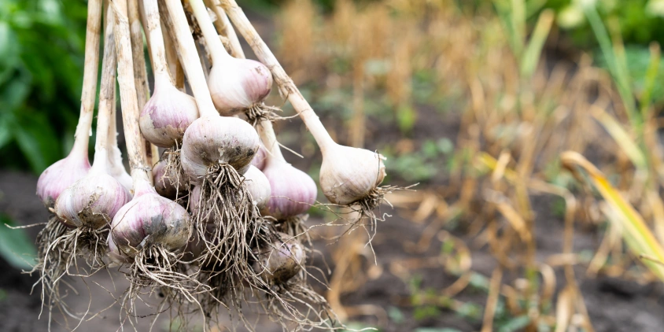
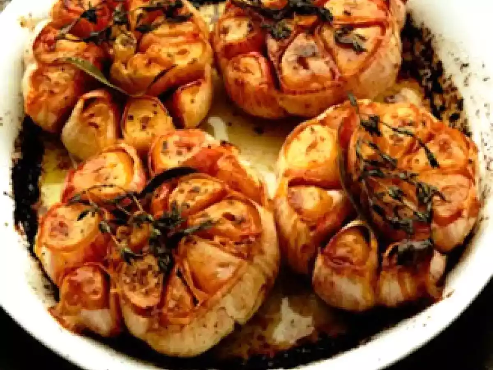
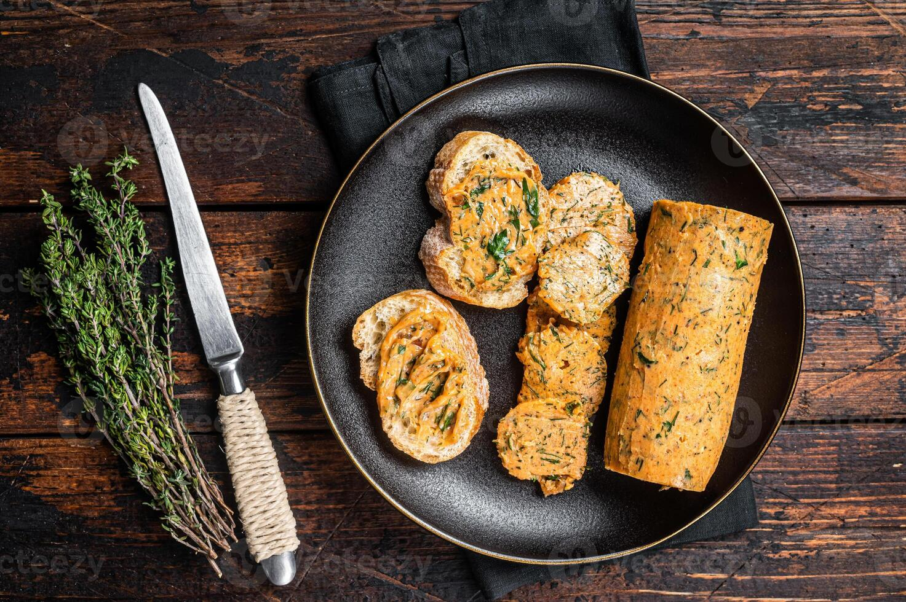

O alho (Allium sativum) é uma planta bulbosa originária da Ásia Central.
É utilizado pela humanidade há mais de 5 mil anos, tanto na culinária quanto na medicina.
O plantio é feito através dos "dentes" de alho em solo bem drenado e com boa exposição solar.
A época ideal de plantio no Brasil costuma ser entre os meses de outono e inverno,
pois a planta necessita de períodos de frio para a formação do bulbo (cabeça).
A floração do alho produz pequenas flores brancas ou rosadas em uma haste longa, porém, no cultivo comercial,
essa haste costuma ser removida para que a energia da planta se concentre no crescimento dos dentes de alho subterrâneos.

Detalhes das Espécies e Composição Nutricional
Existem diversas variedades de alho, sendo as mais comuns o Alho Branco (sabor mais suave) e o
Alho Roxo (mais resistente e com sabor mais intenso). Abaixo, a tabela detalha a composição nutricional média.
Composição Nutricional (por 100g)
Componente
Quantidade
Função Principal
Calorias
149 kcal
Fornecimento de energia
Vitamina C
31.2 mg
Fortalecimento imunológico
Alicina
Presente
Ação antibiótica natural
Potássio
401 mg
Controle da pressão arterial
Benefícios de Consumo:
Redução do colesterol ruim (LDL).
Combate a gripes e resfriados devido à ação antiviral.
Auxilia na prevenção de doenças cardiovasculares.
Possui propriedades anti-inflamatórias potentes.
Vídeo: Como Plantar Alho em Casa

Receitas Detalhadas
1. Alho Assado Inteiro (Confit de Forno)
Uma receita clássica que transforma o alho em uma pasta adocicada, cremosa e suave.
Perfeita para passar no pão ou misturar em purês.
Ingredientes:
3 cabeças de alho inteiras
2 colheres de sopa de azeite de oliva extra virgem
1 pitada de sal refinado
1 pitada de pimenta-do-reino moída
2 ramos de tomilho fresco (opcional)
Modo de Preparo:
Pré-aqueça o forno a 200°C.
Com uma faca afiada, corte cerca de 1 cm do topo das cabeças de alho, expondo levemente os dentes internos.
Coloque as cabeças de alho sobre um pedaço de papel alumínio grande o suficiente para embrulhá-las.
Regue o topo exposto dos dentes de alho com o azeite de oliva.
Tempere com o sal, a pimenta e coloque os ramos de tomilho por cima.
Feche o papel alumínio formando um pacotinho bem vedado para o vapor não escapar.
Leve ao forno e asse por 40 a 45 minutos, até que os dentes estejam completamente macios e dourados.
Retire do forno, espere esfriar um pouco e esprema a base das cabeças para que a pasta de alho saia facilmente.
2. Macarrão Alho e Óleo Tradicional
Ingredientes:
250g de macarrão espaguete
6 dentes de alho grandes fatiados em lâminas finas
5 colheres de sopa de azeite de oliva de boa qualidade
1 pimenta dedo-de-moça sem sementes bem picada (opcional)
Sal a gosto para a água e para o molho
Salsinha fresca picada a gosto
Modo de Preparo:
Em uma panela grande, ferva 3 litros de água com uma colher de sopa cheia de sal.
Adicione o espaguete e cozinhe até ficar al dente (siga o tempo da embalagem).
Enquanto o macarrão cozinha, coloque o azeite e as lâminas de alho em uma frigideira grande e fria.
Ligue o fogo em temperatura média-baixa para que o alho doure lentamente e perfume o óleo sem queimar.
Quando o alho começar a ficar levemente dourado, adicione a pimenta picada e desligue o fogo. O calor residual terminará de dourar o alho.
Reserve meia concha da água do cozimento do macarrão e escorra o restante.
Junte o macarrão escorrido na frigideira com o alho e óleo.
Adicione a água reservada e misture bem em fogo baixo por 1 minuto para criar uma emulsão leve.
Finalize com a salsinha picada e sirva imediatamente.

3. Manteiga de Alho para Churrasco ou Torradas
Uma manteiga composta rica, excelente para finalizar carnes grelhadas, fazer pão de alho caseiro ou derreter sobre vegetais quentes.
Ingredientes:
200g de manteiga sem sal em temperatura ambiente (ponto de pomada)
5 dentes de alho amassados até virarem uma pasta
1 colher de sopa de salsinha picada bem fininha
1 colher de chá de suco de limão espremido na hora
Meia colher de chá de sal refinado
Meia colher de chá de pimenta-do-reino moída
Modo de Preparo:
Certifique-se de que a manteiga está bem macia, mas não derretida líquida.
Em uma tigela pequena, coloque a manteiga e bata levemente com um garfo até ficar homogênea.
Adicione a pasta de alho, a salsinha picada e o suco de limão.
Tempere com o sal e a pimenta-do-reino.
Misture tudo vigorosamente com o garfo até que todos os temperos estejam perfeitamente distribuídos pela manteiga.
Coloque a mistura sobre um pedaço de plástico filme.
Enrole o plástico moldando a manteiga no formato de um cilindro (salame) e torça as pontas para firmar.
Leve à geladeira por pelo menos 2 horas antes de usar para que fique firme e os sabores se infundam.
Bibliografia
EMBRAPA - Cultivo do Alho (Allium sativum L.).
Tabela Brasileira de Composição de Alimentos (TACO).
Ministério da Saúde - Alimentos Funcionais e Seus Benefícios.